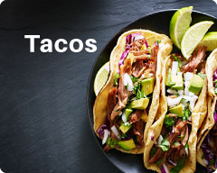
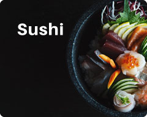
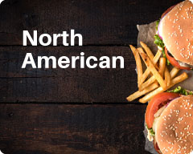

Explore restaurants with our innovative discover tiles



We're growing every day.
Sirved is the world's most comprehensive menu-based search engine,
and we're happy to tell you that we now have...
0
Restaurants across North America and counting...
Sirved is available for free across all platforms
Let Sirved.com Show You All the Restaurant Menus in Town
There are plenty of restaurant menu apps, but none of them provide you with easy access or with appealing food photos from restaurants and restaurant menus across the country. At Sirved, our customers tell us that we offer one of the best restaurant apps on the market. We list more than 450,000 menus (and counting!) of the most interesting, and most popular restaurants located throughout North America. Next time you ask yourself, “What are the best places to eat at near me?” you’ll have your answer in no time. The combination of restaurant menus and food photos , available on our restaurant app and for both iOS and Android devices, allows the user to quickly decide on the best restaurants around them.
Our goal is to introduce you, the hungry customer, to a broad range of restaurants and restaurant menus in locations you may not find on your own. Our platform and menu app are simply designed to be user-friendly and easy to navigate, leading you to some of the best restaurant menus in town. First, start by entering the location of the town or city in which you’re looking to dine in. Next, search for the type of food you’re craving, and BINGO! Sirved will show you a list of restaurants and affiliated menus in seconds!
Our easy to use restaurant app will help you discover restaurants and restaurant menus that you never knew existed. With our foolproof restaurant menu app, you can even search for specific meals such as Tikka Masala, Pad Thai, or Pepperoni Pizza – the list goes on. All you have to do is type in the specific dish you’re craving and if it’s on a menu in any city or town, you’ll instantly receive a list of restaurants that have the specific dish you’re looking for. At Sirved, we proudly believe that we offer more restaurant menus online than any other platform in the business. Big or small, family diner or high-end dinning establishment, our end goal is to provide users with endless restaurant menus across North America.
Sirved is the world’s first menu-based search engine. If you’re in the restaurant business and want to gain more customers, you can’t afford to not be listed on our restaurant app and at sirved.com. We encourage you to get in touch with us and start by creating your restaurant listing for free! We’ll make your restaurant menu available for all of the world to view. If you’re a foodie looking for the best or most unique dining experience or a restaurant menu that caters to your interests or dietary needs, download Sirved today. Don’t worry jet setters, we didn’t forget about you. If you’re frequently travelling, this is a great app to use when visiting cities that you’re not familiar with. There is no need for your friends, family or yourself to take a chance on a restaurant when you can use Sirved to find a great place to eat at every time.
“SIRVED”: THE BEST RESTAURANT MENU APP ON THE MARKET
Many believe that Sirved offers the best menu app on the market, making it easy to find the exact meal or dining experience you’re looking for. We cater to your specific dining interests and needs with our amazing restaurant menu app. You can search for a restaurant based on your cravings, your favorite dish or your specific dietary needs. While searching, you’re not just gaining access to restaurants that have paid to be listed, you’re accessing any and ALL restaurants that are available online. Vegetarian? Vegan? Gluten-free? Our easy-to-use menu app will find restaurant menus that cater to your specific dietary requirements, providing you with all the information you’ll need to know before arriving at the restaurant. We make the dining experience as easy and delightful as can be, even before you visit the restaurant.
We like to think we’ve added a bit of excitement and ‘discovery’ back into the job of finding your ideal restaurant and restaurant menus, meeting all of your expectations and more. Try us out and let us know if you agree. Are you tired of eating at the same old places, but a little nervous to branch out and try something new? Have some fun by switching it up! Sirved will ensure you select a new restaurant that’ll hit the spot and meet your dining needs every time.
At Sirved, we built our proprietary menu-search
technology for both customers and restaurant owners alike.
OUR PLAN IS:
To make Sirved outrageously efficient when looking for a specific restaurant menu, whenever you want it and nearby your location.
To make sure customers exact dining requirements are met by allowing them to search any and all menus in their desired area. Steak? Seafood? Mediterranean? Vegan? Indian? Bison Burgers? Chicken Wings? Pizza? Fast Food? Have you ever thought to yourself, “How do I find restaurants near me?” With Sirved, you can type in what you’re looking for and we’ll do the rest of the work for you!
To be restaurant friendly. No one wins if we take a huge bite out of restaurants’ profits, so that’s why we allow every eatery to post restaurant menus for FREE.
To allow hungry users to view every menu from every restaurant across North America.
To allow hungry users to view every menu from every restaurant across North America.
The Genius of our Restaurant Menu App
Our Sirved menu app relies on simplicity and freedom of choice. Pick your town or city, click on your choice of meal type or dietary need and voila! Before you know it, you’ll be provided with any restaurant in the area that matches your criteria - that’s the genius you’ll find with Sirved!
You’ll find that our menu app is comprehensive and fun to use. So next time you’re travelling, you can use Sirved with confidence when looking for the restaurant that’ll cater to all your cravings.
THE GENIUS
FOR RESTAURANTS
Sirved supports restaurants in what they do best...
Focusing on quality food and a pleasant dining experience.
Here’s a bit of marketing genius for the restaurateurs out there. It doesn’t cost you a nickel to list your restaurant menus on Sirved. Get in touch with us at info@sirved.com and we’ll add you to our list of restaurants across the country.
Sirved provides a user-friendly customer interface which makes your restaurant menus easy to access and read.
We offer a comprehensive analytics dashboard that tracks sales and alerts you when there are changes in the marketplace. This will help you secure customers and take your business to the next level.
The Genius For Consumers
Sirved is the database of choice for savvy consumers. It’s fast, comprehensive and it includes over 450,000 restaurant menus (and counting!) throughout North America
It’s the best restaurant app for finding the type of menu item you’re craving or that best meets your dietary needs.
It offers important restaurant information, such as the restaurant’s menus, location, hours of operation, directions and contact information.
With the ability to filter restaurants and restaurant menus, users can search for specific cuisine types. Chinese? Thai? American? Ethiopian? French? Select the type of cuisine you’re craving. Whether it’s breakfast, lunch, dinner, dessert, a snack or a healthy meal, Sirved will allow you to filter by selected menu types. Whether its gluten-free, organic, kosher, vegetarian or vegan, you can filter by any dietary needs you may have. As you select your search criteria, restaurants and restaurant menus will be added or removed from the options the Sirved app is providing for you.
Sirved allows you to efficiently navigate menus and find exactly what you are looking for. Could it be easier? No. Could it be quicker? No. Could it change the way you select your restaurant of choice? Absolutely! We think you’ll find Sirved to be one of the best restaurant apps on the market. Every good restaurant deserves to be discovered, and we’re here to help make it happen. Big or small, formal or relaxed – we list ANY restaurant menu on Sirved. We’ll help you ‘find restaurants near me’ so that you can get started with having that drool-worthy meal you’ve been dreaming about.
WE’RE THE BEST WAY TO FIND
ANY MENU FOR A RESTAURANT IN YOUR TOWN
Don’t take our word for it.
Here’s what some of the many Sirved users have said about our service after asking it: "places to eat near me?"
Anne Patenaude:
“Very handy when making decisions with groups. Invaluable while travelling.”
Heather Gehl:
“Xcellent app! Everything has been thought of here - menus, prices, contact info, hours of operation, location, even pics!”
Enzo Mancuso of Enzo’s Trattoria:
“Sirved is the only menu search app that delivered what our restaurants are supposed to... Customer Service.”
Frank Edgley:
“Awesome! No more scouring the web for menus or getting bored with the same old foodie fare... This app has become my first stop for food!”
Andrew Buller:
“Great app. As a vegan it makes choosing restaurants very easy!”
At Sirved, we’ve indexed nearly all the restaurant menus in North America. So, wherever you go in North America, you’ll be able to use one of the best restaurant apps available to find exactly what you’re looking for.
The Bottom Line in the Restaurant Industry
Everyone knows that it takes time, hard work, a good product and a bit of luck to be successful in the restaurant business. It’s unfortunate to report that over 75% of new restaurants don’t make it past their fifth year in business. The Sirved menu app can become one of your greatest assets when helping you develop inexpensive marketing strategies, bringing more loyal customers through your door. After you sign your restaurant up with us, your menu listing will be added to Sirved for all of the world to see. You’ll be connected to one of the best restaurant apps in North America. Join us today, and we’ll grow together in the years to come.
Let's face it... that was pretty long. High fives all around for making it all the way to the bottom!